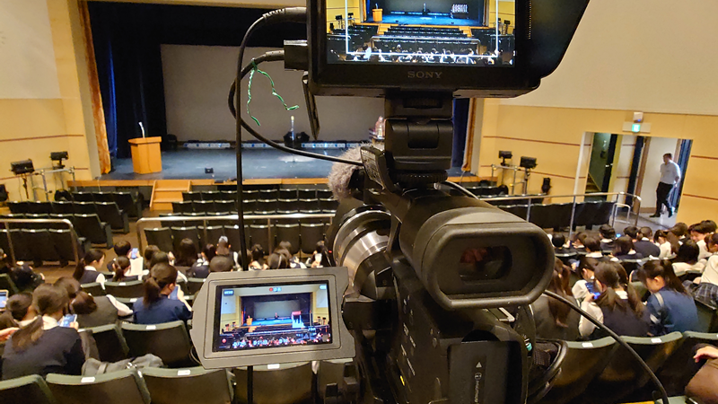

目次
テキストや画像をクリックするとその部門のある階のフロアマップへジャンプします。
エレベーターホール NHK杯パネル フォトスポット 多目的ホール 6/15 (日) 14:00～ 閉会式  中庭 情熱発電所VI フォトスポット
食堂 6/15 (日) 利用時間：11:30～13:30（13:00ラストオーダー）
北ホール 発声練習会場
北ホール 発声練習会場 E1-1 M1A(定) 6/14 (土) アナウンスA 6/15 (日) アナウンス本選 モニタ室 E1-2 M1B(定) 6/14 (土) アナウンスA 待機室 6/15 (日) アナウンス本選 モニタ室 E1-3 C1(定) 6/14 (土) アナウンスB 6/15 (日) アナウンス本選 モニタ室 選択教室 E1(定) 6/14 (土) アナウンスB 待機室 6/15 (日) アナウンス本選 モニタ室 視聴覚室 6/15 (日) アナウンス本選
北ホール 発声練習会場 A1-1 M2A(定) 生徒控室 A1-2 M2B(定) 生徒控室 M1-1 C2(定) 生徒控室 M1-2 E2(定) 生徒控室
エレベーターホール 原稿・番組進行表 提出受付 北ホール 発声練習会場 自動制御実習室 本部・集計 審査員集合場所